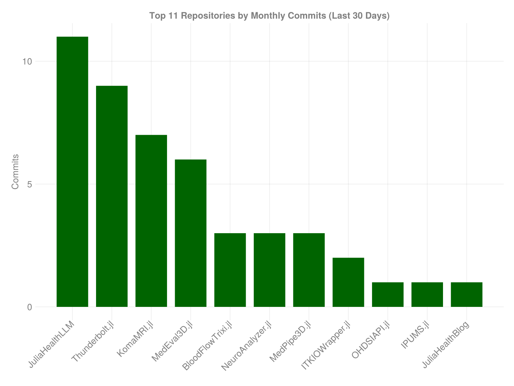
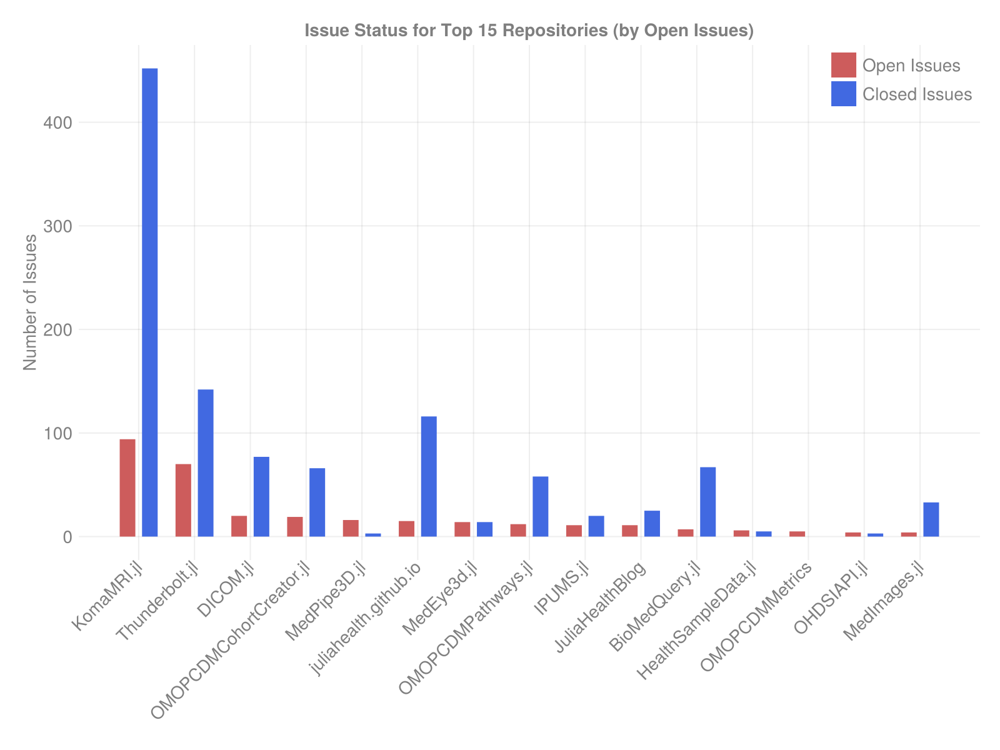
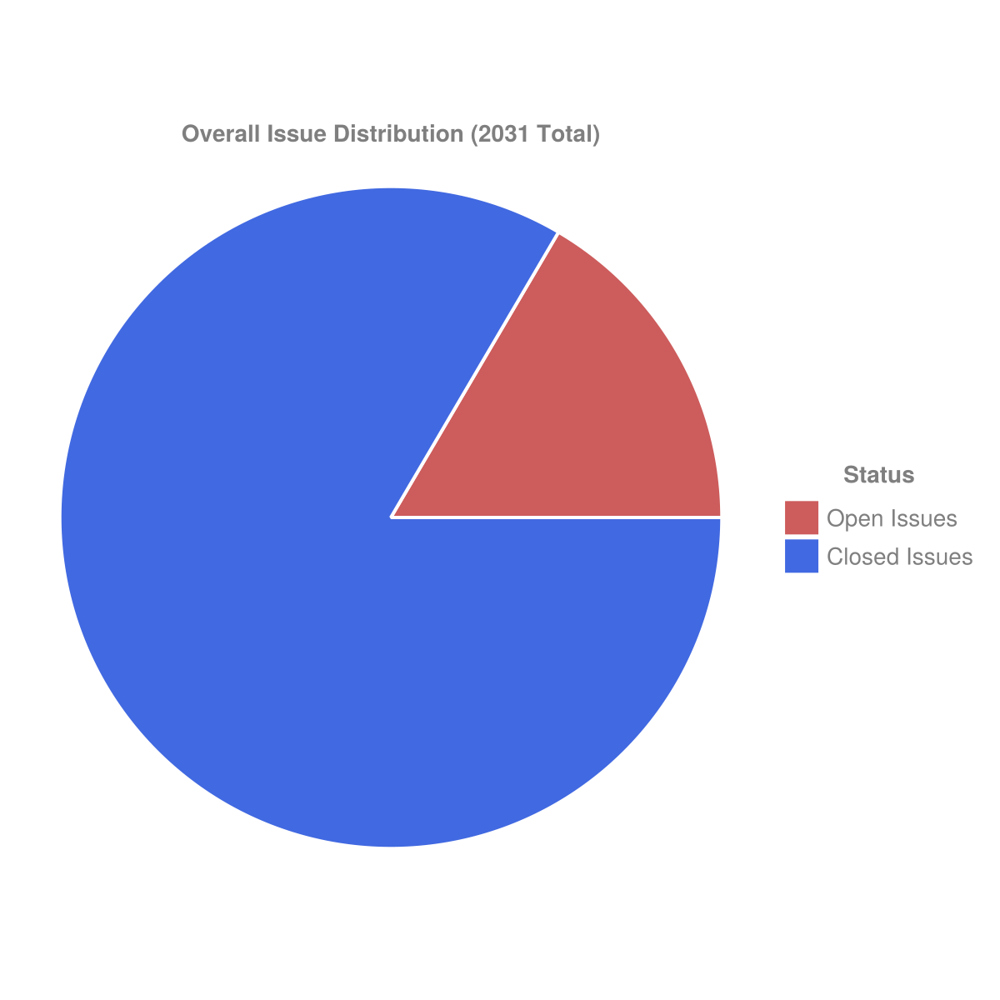

Visualizing the JuliaHealth Ecosystem: An Updated GitHub Analysis
Introduction
The JuliaHealth organization on GitHub is a cornerstone of the Julia ecosystem, providing a suite of essential packages for healthcare research, bioinformatics, and medical data analysis. Understanding the dynamics of this organization—how its projects are evolving, how actively they are maintained, and how the community engages—is crucial for users and contributors alike.

This post presents an automated analysis of the JuliaHealth organization, leveraging a custom Julia script to fetch data directly from the GitHub API. We’ll explore a series of visualizations generated by this script, offering insights into repository popularity, development velocity, issue management, contributor activity, and pull request handling across the ecosystem.
Repository Popularity: Stars

GitHub stars often serve as a proxy for repository visibility and community interest. This bar chart showcases the top repositories within JuliaHealth, sorted by their star count.
- Observations: We typically see a power-law distribution, where a few key repositories garner a significant portion of the stars, indicating their status as flagship or widely-used packages within the ecosystem. The
steelbluebars clearly rank the repositories, highlighting those with the broadest community recognition. A long tail of repositories with fewer stars suggests a diverse ecosystem supporting various niche applications.
Recent Development Activity: Monthly Commits

To gauge recent development intensity, we look at the number of commits made in the last 30 days for the most active repositories.
- Observations: The
darkgreenbars represent the commit volume for the top repositories in terms of recent activity. Spikes in specific repositories might indicate active feature development, refactoring, or release preparation phases. Repositories with consistent, moderate bars suggest steady maintenance and ongoing improvements. This view helps identify where current development efforts are concentrated.
Issue Management Status

Effective issue management is vital for project health. This plot compares the number of open (indianred) versus closed (royalblue) issues for the repositories with the most open issues.
- Observations: The grouped bars allow for a direct comparison within each repository. A large red bar relative to the blue bar might indicate a growing backlog or areas needing more maintenance attention. Conversely, a dominant blue bar suggests effective issue resolution and active maintenance. This visualization provides a snapshot of the maintenance load and responsiveness across key projects.
Organization-Wide Commit Trends

Aggregating commit data across all analyzed repositories allows us to see the overall development pulse of the organization over the past 12 months.
- Observations: The
orangeline tracks the total number of commits per month, while theredmarkers highlight the data points. This plot can reveal cyclical patterns (e.g., related to academic cycles or release schedules), periods of intense activity, or overall trends in development velocity for the organization as a whole. It helps understand the ecosystem’s collective rhythm.
Top Contributors

Open source projects thrive on community contributions. This chart identifies the individuals who have contributed the most commits across all repositories within JuliaHealth during the analyzed period (typically the last 12 months for commit history).
- Observations: The descending
purplebars show the distribution of contributions. Often, a small group of core contributors accounts for a large portion of the commits, highlighting their crucial role. The length of the tail indicates the breadth of community involvement. This helps recognize key maintainers and understand the structure of the contributor base.
Overall Issue Health: Open vs. Closed

This pie chart provides a high-level overview of the issue status aggregated across all repositories analyzed within JuliaHealth.
- Observations: The chart shows the proportion of currently open issues (
indianred) compared to resolved issues (royalblue). A larger blue slice generally indicates a healthy state of maintenance where issues are being addressed effectively relative to the rate at which they are opened. This gives a quick gut check on the overall responsiveness of the organization to reported problems and feature requests.
Pull Request Summary

Pull Requests (PRs) are central to collaborative development. This composite visualization provides key statistics and a status breakdown for PRs across the organization.
- Observations:
- Text Summary (Left): This box provides quick totals for open, merged, and closed (but not merged) PRs. It also shows the calculated average time it takes for PRs to be merged across repositories that have merge data, offering insight into review velocity.
- PR Status Distribution (Right): The pie chart breaks down the current state of all PRs considered: Open (
orange), Merged (darkgreen), and Closed without merging (firebrick). This complements the issue distribution by showing the flow of proposed changes and the efficiency of the review process.
Key Insights from the Analysis
Based on the generated visualizations and underlying data, we can draw several conclusions about the JuliaHealth ecosystem:
- Active Core & Diverse Ecosystem: There are clearly identifiable core packages with high visibility (stars) and often significant development activity, alongside a wide range of specialized packages.
- Ongoing Development & Maintenance: The commit activity and issue resolution metrics suggest that many repositories receive consistent attention, indicating healthy maintenance practices overall.
- Engaged Community: The presence of numerous contributors and the volume of issues and PRs point towards an active user and developer community engaging with the projects.
- Transparency via Metrics: Tools like this script provide valuable, data-driven insights into the state and evolution of the organization, useful for maintainers, contributors, and users.
Data Availability
The detailed metrics used for these visualizations, including per-repository stats and contributor summaries, are also exported to CSV files during the script’s execution. These allow for deeper, custom analyses:
repository_metrics_[timestamp].csvcontributor_summary_[timestamp].csv
Conclusion
This automated analysis paints a picture of JuliaHealth as a dynamic and generally well-maintained open-source organization. The visualizations highlight areas of intense activity, repositories with significant community adoption, and the overall positive trend of development and issue management. While individual repositories have different life cycles and activity levels, the ecosystem as a whole appears robust and continues to be a vital resource for healthcare computing within the Julia language.
Disclaimer: This analysis reflects a snapshot of the JuliaHealth organization based on data retrieved from the GitHub API around the date mentioned above. Metrics like commit counts, issue status, and contributor activity are constantly evolving.
Citation
@online{community_(leader_jacobzelko,_contributor_divyansh_goyal)2025,
author = {Community (Leader JacobZelko, Contributor Divyansh Goyal),
JuliaHealth},
title = {Visualizing the {JuliaHealth} {Ecosystem:} {An} {Updated}
{GitHub} {Analysis}},
date = {2025-04-30},
langid = {en}
}